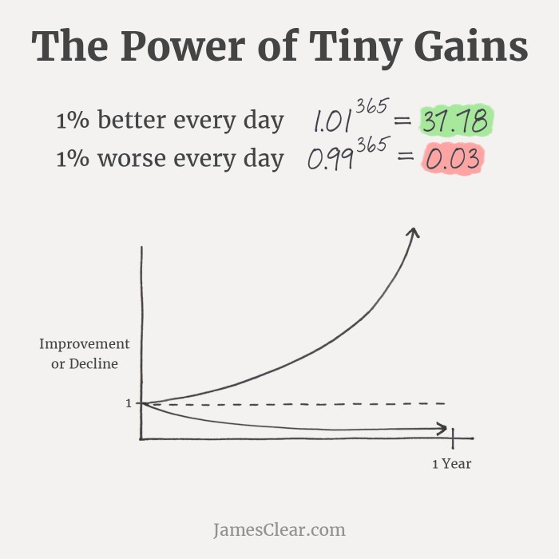

The Small Compounding Steps
February 5, 2025
When I first stumbled upon the idea of 1% improvements in the book, "Atomic Habits" by James Clear, I was intrigued but unsure how to apply it to my own life. I decided to start with three areas that felt manageable but impactful: my physical strength, my sleep habits, and my relationship with distractions. What unfolded was a quiet, steady transformation that proved the power of small, consistent changes.
Fitness: Performance in The Gym
I've always enjoyed lifting weights, however, like many others, I had hit a plateau. I was stuck lifting the same weights week after week, incredibly frustrated by my lack of progress. Inspired by the idea of incremental improvement, I decided to take a different approach. Instead of trying to make huge jumps in the weight I was lifting, I committed to adding just a little more each week—sometimes as little as 2.5 pounds.
At first, This small increment in weight felt insignificant. I wondered if such a small increase would even matter. But over time, those tiny additions to my total weight started to add up. What began as a 2.5-pound increase turned into 5 pounds, then 10, and before I knew it, I was lifting weights I had broken out of my plateau and began breaking my personal records. The key was consistency. By focusing on small, sustainable progress, I avoided burnout and potential injuries from possibly taking too large of a jump in weight. I also began lifting weights I had thought were out of reach. It was a powerful reminder that growth doesn't have to be dramatic to be meaningful.
Sleep: 20 Minutes at a Time
Sleep has always been a struggle for me. I'd stay up late scrolling on my phone or watching just one more episode, only to wake up groggy and unproductive. I knew I needed more sleep, but the idea of going to bed an hour earlier felt impossible. So, I started small: just 20 minutes earlier than my usual bedtime.
At first, it didn't feel like much. I still wasn't getting the recommended 8 hours, but those extra 20 minutes made a small difference. I felt slightly more rested, which gave me the push to stick to this little habit. Over time, I inched my bedtime forward another 20 minutes. Slowly but surely, I was getting more sleep without feeling like I was sacrificing my evenings. The compounding effect was incredible—better sleep led to more energy, which improved my workouts, my focus, and even my mood.
Distractions: Putting My Phone Down
My phone was my biggest distraction. I'd pick it up to check one notification and end up lost in a rabbit hole of social media, emails, and random articles. I knew I needed to break the cycle, but quitting cold turkey felt overwhelming. Instead, I started small. I began by setting my phone down for just 10 minutes at a time while I worked or spent time with loved ones.
At first, it was hard. I felt the pull of my phone constantly, but I reminded myself that 10 minutes was doable. Gradually, I increased the time—15 minutes, then 30, then an hour. I started leaving my phone in another room during meals and turning off notifications during focused work sessions. Over time, I noticed a shift. I was more present, more engaged, and less anxious. The small act of putting my phone down became a gateway to deeper focus and connection.
I also implemented restrictions on the apps that were major sources of distraction. I realized that by creating barriers—small hurdles that made accessing these apps slightly more difficult—I could significantly increase my chances of staying focused. Over time, I gradually introduced app blockers and time restrictions, which helped me break the cycle of mindless scrolling. Now, I'm proud to say that I've eliminated many of the distractions that once consumed my time. In fact, you won't find a single social media app on any of my devices—a testament to how far small, intentional changes can take you.
The Power of Compounding
Looking back, it's amazing how these small changes added up. Lifting a little more weight each week made me stronger. Going to bed 20 minutes earlier gave me more energy. Putting my phone down for short periods helped me reclaim my focus. Individually, these actions felt insignificant, but together, they created a ripple effect that transformed my days.
The beauty of this approach is that it's sustainable. It doesn't rely on willpower or drastic overhauls. It's about showing up consistently, even in the smallest ways, and trusting that those efforts will compound over time. I've learned that progress isn't about perfection—it's about persistence. And sometimes, the smallest steps lead to the biggest changes.
← Back to Blog